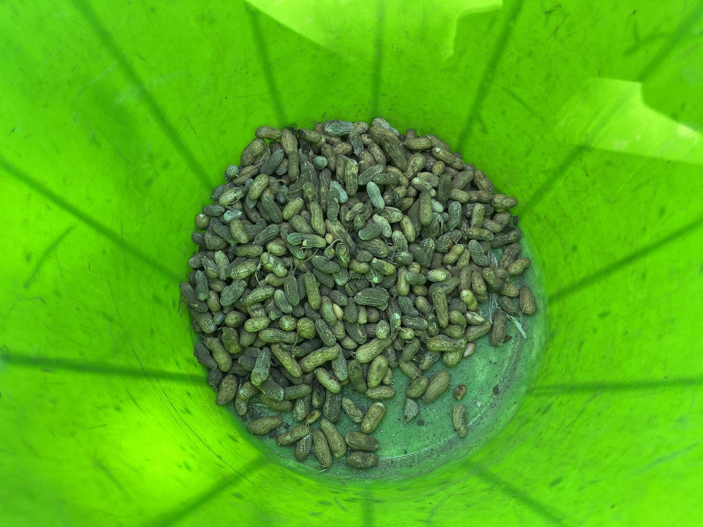
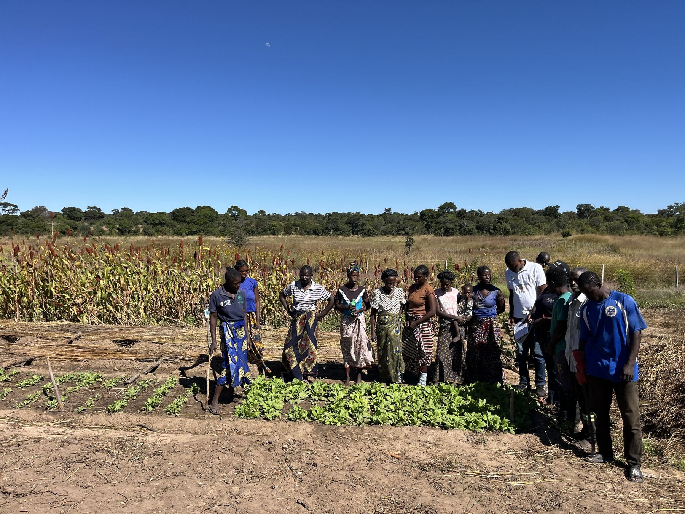
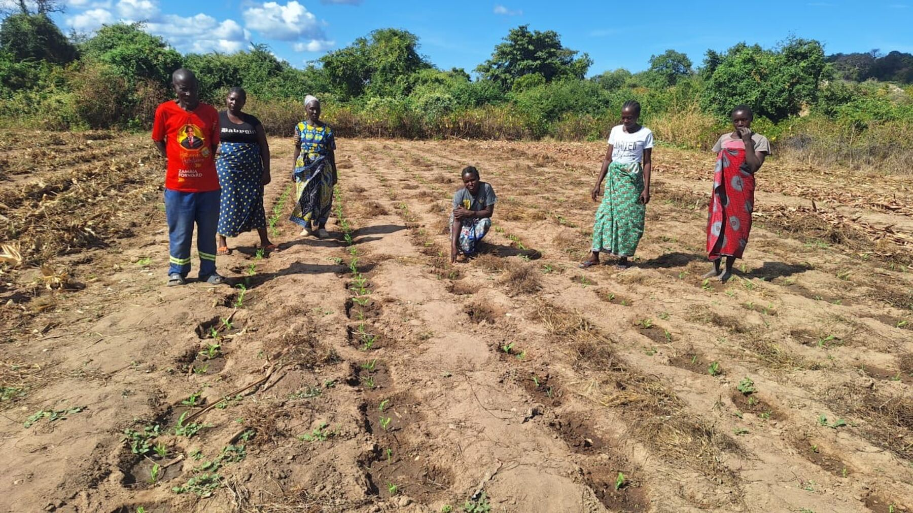
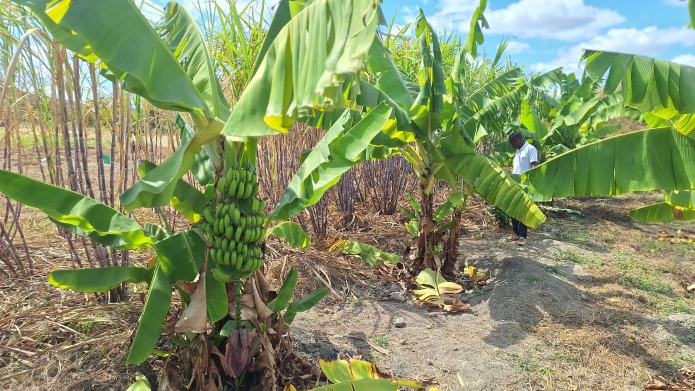
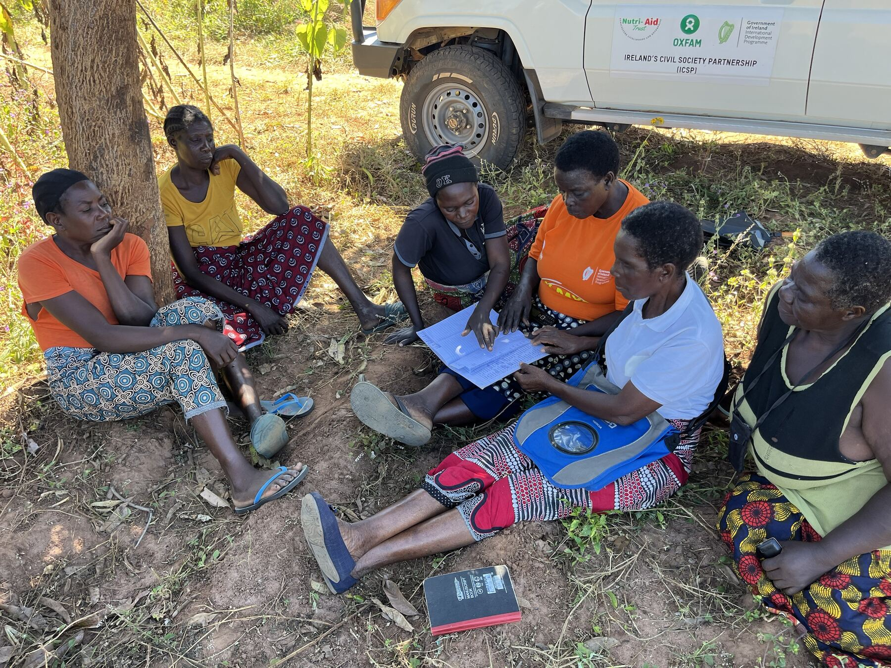
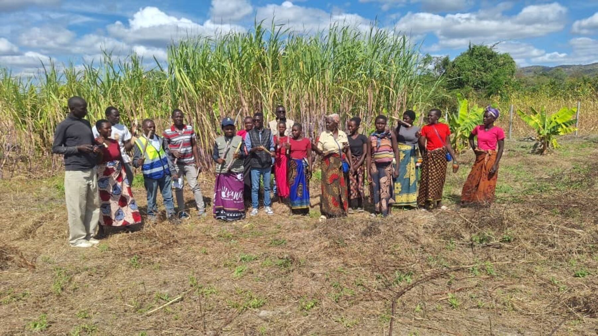

Food and nutrition security
Diverse crops, cooking demonstrations and better storage put more nutritious food on household tables.
From stronger harvests to stronger businesses, here is what changes when farming families have the right skills, inputs and markets.

Diverse crops, cooking demonstrations and better storage put more nutritious food on household tables.

Irrigation, improved seed and field-school learning help farmers keep producing through erratic seasons.

Women, young people and marginalised groups gain skills, income and a voice in decisions.

Aggregation, processing and links to buyers help smallholders earn fair prices.

Savings groups and financial literacy let families save, borrow and plan.

Agro-dealers and rural SMEs bring inputs and services close to farmers and create local jobs.
Field stories, testimonials and verified results will be added here as they are cleared with our communities and partners. See the gallery for more from the field.